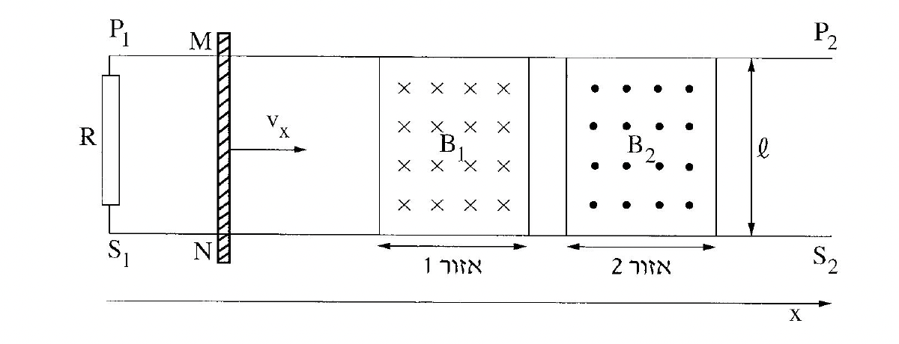

שאלה 5
בתרשים שלפניכם מוצגת מערכת ניסוי, במבט מלמעלה. המערכת מורכבת משתי מסילות חלקות, S1S2 ו-P1P2, המונחות במקביל על שולחן אופקי, במרחק ℓ זו מזו (ראו תרשים).
על המסילות מונח מוט MN שמסתו m. המסילות והמוט מוליכים, והתנגדותם זניחה.
(התנגדות האוויר ניתנת אף היא להזנחה).
נגד R מחבר בין הקצוות P1 ו-S1 של המסילות.
בין המסילות באזור 1 (0 ≤ x ≤ 0.4m) יש שדה מגנטי B1,
ובין המסילות באזור 2 (0.5m ≤ x ≤ 0.9m) יש שדה מגנטי B2.
שני השדות קבועים, מאונכים למישור השולחן ושווים בגודלם: |B1| = |B2| = 0.04T.
הכיוונים של השדות מסומנים בתרשים.
נתון:
ℓ = 50cm
R = 4Ω

בניסוי המוט MN נכנס לאזור 1 במהירות של vx = 2 ms. באזור זה פועל על המוט כוח F1 בכיוון ציר ה-x, ולכן מהירותו נשארה קבועה.
קבעו אם במהלך התנועה של המוט באזור 1, זורם זרם בנגד R.
אם לא - נמקו מדוע.
אם כן - מצאו את גודלו של הזרם ואת כיוונו (מ-S1 ל-P1, או מ-P1 ל-S1).
(8 נקודות)
קבעו אם עבודתו של הכוח F1, הדרושה לקיומה של תנועה קצובה זו באזור 1 גדולה מכמות החום המתפתחת בנגד R באותו פרק זמן, קטנה ממנה או שווה לה.
נמקו את קביעתכם במילים או באמצעות חישוב.
(6 נקודות)
באזור 2 פועל על המוט MN כוח F2 בכיוון ציר ה-x (במקום הכוח F1), ולכן הוא נע בתאוצה קבועה a = 5 ms2 (שים לב שמהירותו ההתחלתית של המוט באזור זה היא 2 ms).
קבעו במקרה זה את כיוונו של הזרם בנגד R (מ-S1 ל-P1, או מ-P1 ל-S1).
(6 נקודות)
בטאו את הזרם בנגד כפונקציה של הזמן. רגע הכניסה של המוט לאזור 2 הוא t = 0.
(8 נקודות)
קבעו אם עבודתו של כוח F2, הדרושה לקיומה של תנועה זו באזור 2, גדולה מכמות החום המתפתחת בנגד R באותו פרק זמן, קטנה ממנה או שווה לה. נמקו בלי לחשב.
(5 13 נקודות)